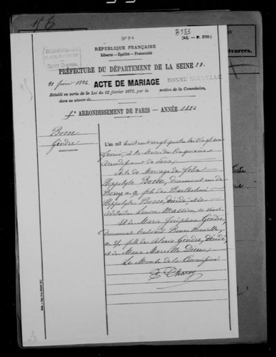
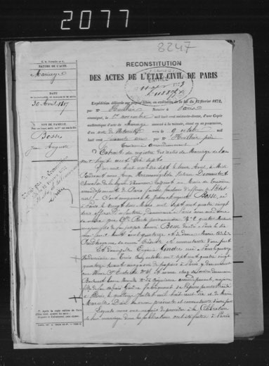

Sosa 47 · Côté Rignault · absente de l'arbre transmis, ajoutée par l'enquête
Marie Marcelle Dieu
Dates inconnues
Arrière-arrière-arrière-grand-mère de René, côté paternel.
Récit
Marie Marcelle Dieu est l'épouse d'Alexis Gindre, fabricant de papiers peints, mort en 1810 ; elle est veuve et vit boulevard Bonne-Nouvelle quand sa fille Eugénie se marie, le 30 avril 1817, et elle signe l'acte « M.M. Dieu ». Elle a deux filles : Eugénie, née en 1794, qui tient un magasin de papiers rue Neuve Saint-Eustache, et Marie Joséphine, qui épouse Félix Hippolyte Bosse en 1824 ; elle est donc l'aïeule d'Adèle Félicie Bosse. À ce mariage de 1817, un cousin maternel d'Eugénie, l'huissier François Vincent Bridet, 50 ans, est présent : le lien avec la famille Dieu n'est pas précisé. On ne sait rien d'autre d'elle : ni sa naissance, ni sa mort.
Récit rédigé le 25 novembre 2026 à partir de la base, qui fait foi. Chaque marque ouvre la preuve du passage.
Famille
Sa vie dans le temps
- Première République
- Eugénie Gindre est née à Paris le 14 vendémiaire an III (05/10/1794) ; en 1817 elle tient un magasin de papiers rue Neuve Saint-Eustache n° 4[5 ?] ; sa mère demeure boulevard Bonne-Nouvelle n° 3[7 ?] ; elle est fille d'Alexis Gindre et de Marie Marcelle Dieu — Paris vérifié
- Premier Empire
- Alexis Gindre, fabricant de papiers peints, est mort à Paris le 14/07/1810 ; sa veuve, Marie Marcelle Dieu, est vivante le 30/04/1817, domiciliée boulevard Bonne-Nouvelle, 5e arrondissement ancien — Paris vérifié
- Restauration
- En 1824, Marie Joséphine Gindre demeure boulevard Bonne-Nouvelle n° [35 ? ou 75 ?] ; elle est fille d'Alexis Gindre, décédé, et de Marie Marcelle Dieu — Paris vérifié
Documents (2)


Continuer l'exploration
Dossier complet : toutes les informations et leurs sources
Sosa 47.
Cité seulement par le rapport Heredis (sources/ascendance.txt) ; dates du rapport : (c) 17631827
Biographie
Récit rédigé le 2026-11-25 à partir de la base, qui fait foi. Les crochets renvoient aux assertions (onglet Toutes les informations).
Marie Marcelle Dieu est l'épouse d'Alexis Gindre, fabricant de papiers peints, mort en 1810 ; elle est veuve et vit boulevard Bonne-Nouvelle quand sa fille Eugénie se marie, le 30 avril 1817, et elle signe l'acte « M.M. Dieu ». Elle a deux filles : Eugénie, née en 1794, qui tient un magasin de papiers rue Neuve Saint-Eustache, et Marie Joséphine, qui épouse Félix Hippolyte Bosse en 1824 ; elle est donc l'aïeule d'Adèle Félicie Bosse. À ce mariage de 1817, un cousin maternel d'Eugénie, l'huissier François Vincent Bridet, 50 ans, est présent : le lien avec la famille Dieu n'est pas précisé. On ne sait rien d'autre d'elle : ni sa naissance, ni sa mort. [A0813, A0814, A0815, A0816, A0817, A0818]
Faits clés
- Naissance : inconnu (rien dans la base)
- Parents : inconnus (aucune filiation dans la base)
- Mariage : avec Alexis GINDRE (PR0046) — date et lieu inconnus (aucun acte de mariage dans la base ; union connue par la filiation d'un enfant)
- Décès : inconnu (rien dans la base)
Famille
Liens tirés des assertions de la base ; le statut de chaque lien est celui des assertions citées. Les proches plus éloignés sont calculés à partir de ces liens directs.
Parents
- aucun dans la base.
Conjoint(s)
- Alexis GINDRE (PR0046) — union connue par la filiation d'un enfant ; pas d'acte de mariage dans la base [A0311 non vérifié, A0813 vérifié, A0814 vérifié, A0815 vérifié, A0816 vérifié, AR0216 non vérifié]
Enfants
- Marie Josephine GINDRE (P7065) [A0813 vérifié, A0816 vérifié, AR0216 non vérifié]
- Eugénie GINDRE (PN0091) [A0814 vérifié, A0815 vérifié]
Frères et sœurs
- aucun dans la base.
Proches et alliés (calculés)
Gendres et belles-filles
- Felix Hippolyte BOSSE (P7062) — conjoint de Marie Josephine GINDRE (P7065) [A0314 vérifié, A0811 vérifié, A0813 vérifié, A0816 vérifié, AR0187 non vérifié, AR0216 non vérifié]
Petits-enfants
- Adèle Félicie BOSSE (P5767) — par Marie Josephine GINDRE (P7065) [A0299 vérifié, A0318 vérifié, A0813 vérifié, A0816 vérifié, AR0188 non vérifié, AR0216 non vérifié]
Toutes les informations
-
[A0815] vérifié · transcription · confiance forte — Eugénie Gindre est née à Paris le 14 vendémiaire an III (05/10/1794) ; en 1817 elle tient un magasin de papiers rue Neuve Saint-Eustache n° 4[5 ?] ; sa mère demeure boulevard Bonne-Nouvelle n° 3[7 ?] ; elle est fille d'Alexis Gindre et de Marie Marcelle Dieu
- Limite : Date de naissance donnée dans l'acte de mariage, non lue sur l'acte de naissance ; numéros de rue incertains.
- Possibilités : —
- Sources : S0453
-
[A0814] vérifié · transcription · confiance forte — Alexis Gindre, fabricant de papiers peints, est mort à Paris le 14/07/1810 ; sa veuve, Marie Marcelle Dieu, est vivante le 30/04/1817, domiciliée boulevard Bonne-Nouvelle, 5e arrondissement ancien
- Limite : Le décès est donné par mention dans un acte de mariage, non par son propre acte (non cherché : Sosa 46, hors périmètre).
- Possibilités : —
- Sources : S0453
- [A0816] vérifié · recoupement · confiance forte — L'Alexis Gindre mort le 14/07/1810 et la Marie Marcelle Dieu de l'acte de 1817 sont les parents de Marie Joséphine Gindre (Sosa 23) ; l'hypothèse A0311 est établie
- [A0813] vérifié · transcription · confiance moyenne — En 1824, Marie Joséphine Gindre demeure boulevard Bonne-Nouvelle n° [35 ? ou 75 ?] ; elle est fille d'Alexis Gindre, décédé, et de Marie Marcelle Dieu
-
[AR0216] non vérifié · rapporté par un tiers · confiance faible — filiation : Marie Josephine GINDRE (P7065) enfant de Alexis GINDRE (PR0046) et Marie Marcelle DIEU (PR0047)
- Sources : S-RAPPORT
Sources citées
- S-RAPPORT — Rapport d'ascendance Heredis de René DUBART (5 générations) (consultee)
- S0448 — Mariage de Félix Hippolyte Bosse et Marie Joséphine Gindre, 21 février 1824, 5e arrondissement ancien : acte rétabli (un acte, deux vues) (consultee, 5Mi1 2040 (mariages du 18 au 23/02/1824 ; fiches 737694 et 737695), vues 737694 : 49-50 ; 737695 : 0)
- S0453 — Mariage de Jean Auguste Bosse et Eugénie Gindre, 30 avril 1817, 3e arrondissement ancien : extrait authentique de l'acte, délivré le 1er novembre 1872 par Me Huillier, notaire, d'après une copie annexée à une minute notariale (acte de notoriété du 9 octobre 1871), servant au rétablissement (consultee, 5Mi1 2025 (mariages du 28 au 30/04/1817 ; fiche 736802), vues 44-45)